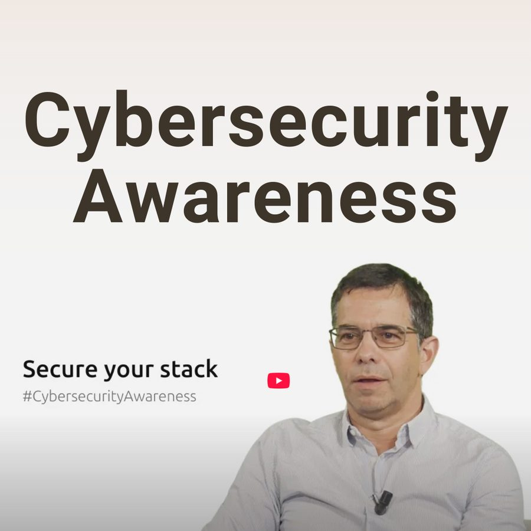

7
Educational videos scripted & produced
Live-site case copy
The brief: elevate Canonical's open-source security message through a multi-part video series timed to Cybersecurity Awareness Month - positioning the company as both a technical expert and a trustable voice on system hardening, compliance and secure-by-default infrastructure. Figures on this page come from the live-site case copy and are labelled where they need owner confirmation.

Cybersecurity Awareness Month is easy to treat as an internal box-tick. The objective here was the opposite: make it a moment that positioned Canonical as a technical authority and a trustable voice - across topics like SysOps, device security, and the EU Cyber Resilience Act.
That meant translating a security product roadmap into narratives a technical audience would actually watch.
| Output | Detail | Source |
|---|---|---|
| Video series | 7-part YouTube security playlist | Live-site case copy |
| Spokespeople briefed | 3 internal product/security leads | Live-site case copy |
| Best-performing episode | 1.2K views · 45% avg completion | Live-site case copy |
| Engagement lift | +22% MoM during October | Live-site case copy |
| Reuse | Cutdowns in Secure Stack, Ubuntu Pro, Landscape | Live-site case copy |
This is a craft-and-systems case more than a scale case: the strongest verified numbers are the outputs (7 videos, 3 spokespeople, the reuse across campaigns), not the reach. The view and completion figures are single-episode and come from the live site, which is the lowest-authority source in this portfolio.
NEEDS_HUMAN: series-level analytics (total views, watch-time, subscriber impact) from YouTube Studio; public playlist link